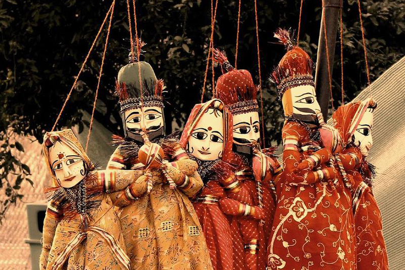

Horario
Todos los sábados de julio de 18:00 a 00:00.
Actividades
Cada sábado estará ambientado según el lugar de origen de los títeres representados. Dispondremos de luces, música ambiente y comida propia de cada región. Ven y disfruta de este evento multicultural y artístico único en Valencia.
Indonesia
Sábado 7

Wayang kulit (títeres javaneses).
Teatro de sombras protagonizado por títeres de varillas y su sombra. Las marionetas se construyen generalmente en cuero troquelado y pintado y tienen brazos móviles (una varilla central unida a la cabeza y dos varillas que conectan con las manos). Miden entre 40cm y 80cm de altura. Las marionetas actúan entre una fuente lumínica y una cortina o telón sobre el que se proyectan las sombras,
Japón
Sábado 14

Ningyo Johruri Bunraku (teatro de marionetas japonés).
Cada marioneta es manipulada generalmente por tres personas, excepto los personajes secundarios, que suelen ser más sencillos. Los titiriteros aparecen a la vista de los espectadores. Además de ellos se encuentra la figura del narrador, quien acompañado por la música del shamisen, relata la historia poniendo voces a los personajes.
Nepal
Sábado 21
Kathputlis (títeres nepalíes).
Se construyen con madera, papel reciclado, restos de sari, alambre y tela. Se caracterizan por sus cabezas talladas y sus amplios y voluminosos faldones. Los ojos son el último elemento que se añade en el proceso de construcción, destacados por su expresividad, y es cuando, según la creencia popular, las marionetas cobran vida. El movimiento se les añade mediante cuerdas.
Vietnam
Sábado 28

Roi nuoc (títeres vietnamitas).
Están hechas de madera, normalmente de higuera, meticulosamente esculpidas, policromadas con alegres colores y esmaltadas. Se mueven a bastante distancia, desde atrás, con varillas, perchas y cuerdas, por titiriteros ocultos tras pantallas de tela o toldos. Las marionetas sobre el agua de Vietnam constituyen un arte milenario único en el mundo.